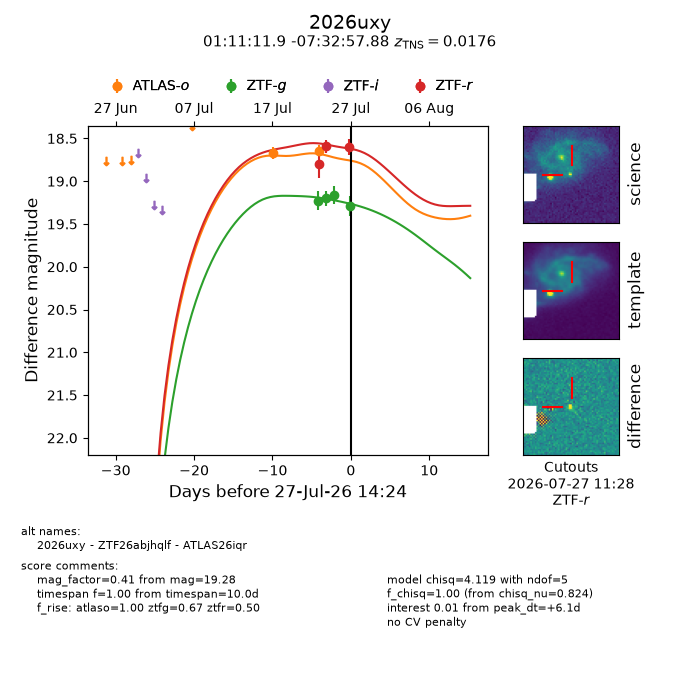
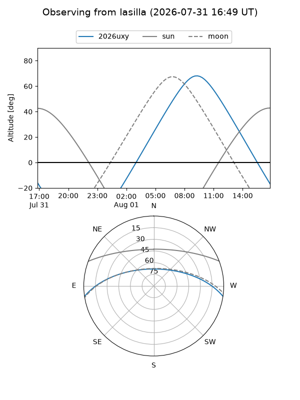
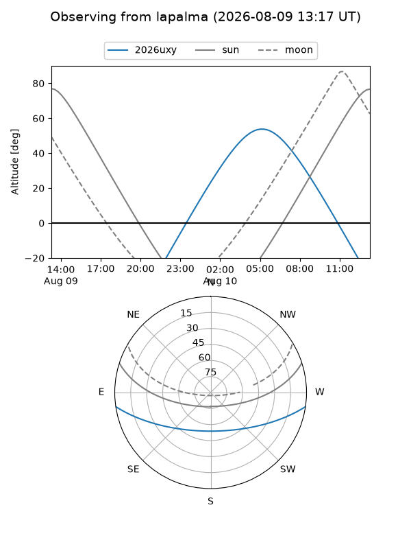
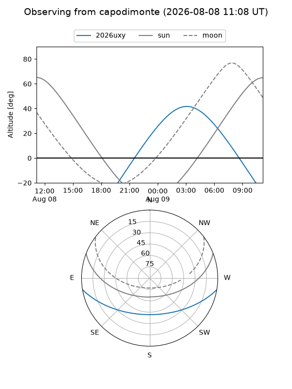
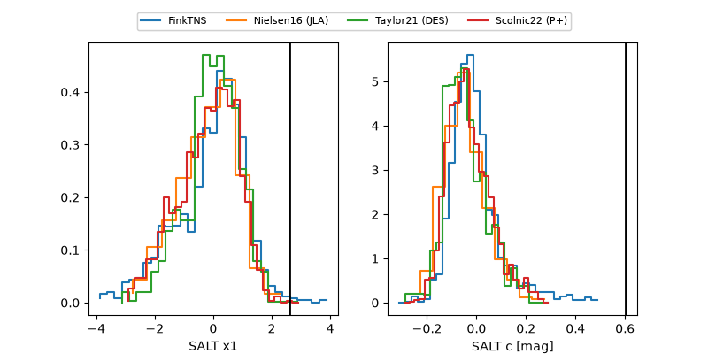

2026uxy
Target 2026uxy at 2026-07-27 14:27
Aliases and brokers:
FINK-ZTF: ztf.fink-portal.org/ZTF26abjhqlf
Lasair-ZTF: lasair-ztf.lsst.ac.uk/objects/ZTF26abjhqlf
ALeRCE-ZTF: alerce.online/object/ZTF26abjhqlf
YSE-PZ: ziggy.ucolick.org/yse/transient_detail/2026uxy
TNS name: wis-tns.org/object/2026uxy
Direct TNS query: direct search
alt names
ZTF26abjhqlf (ztf,fink_ztf)
2026uxy (tns,yse)
ATLAS26iqr (atlas)
Coordinates:
equatorial (ra, dec) = 17.7994,-7.54941
equatorial (HMS+DMS) = 01:11:11.85,-07:32:57.88
galactic (l, b) = (137.2925,-69.86832)
Flags:
TNS type: SN II
TNS redshift: 0.0176
peak dt: +6.1
Photometry:
last atlaso=18.64, ztfg=19.28, ztfr=18.60
2 atlaso, 4 ztfg, 3 ztfr detections
Lightcurve

Visibility



Additional plots
